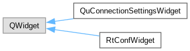

qumbia-tango-controls
1.x
Library on top of cumbia-qtcontrols and cumbia-tango
Class Hierarchy
Go to the textual class hierarchy

Generated on Fri Jun 5 2020 16:43:18 for qumbia-tango-controls by
1.8.18


 1.8.18
1.8.18